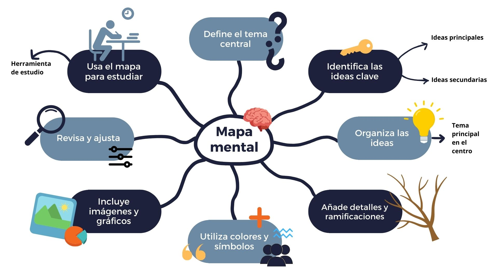

Técnicas de Estudio
Las técnicas de estudio son herramientas que ayudan a los estudiantes a organizar, comprender y retener mejor la información. Usarlas correctamente puede marcar la diferencia en el rendimiento académico.
1. Mapas mentales
Son diagramas visuales que organizan ideas de forma jerárquica. Ayudan a relacionar conceptos y mejorar la memoria visual.
2. Método Pomodoro
Consiste en estudiar durante 25 minutos y descansar 5. Esto mejora la concentración y evita la fatiga mental.

3. Feynman Technique
Se basa en explicar un tema como si se lo enseñaras a alguien más. Al hacerlo, detectas qué partes no entiendes completamente.
4. Subrayado y resumen
Subrayar lo más importante y luego hacer resúmenes con tus propias palabras mejora la comprensión lectora.
5. Técnica de repaso espaciado
Revisar lo aprendido en intervalos crecientes de tiempo ayuda a retener información a largo plazo.
Recomendaciones generales
- Estudia en un lugar sin distracciones.
- Utiliza colores y gráficos para memorizar mejor.
- No te sobrecargues: planifica sesiones realistas.
- Haz pausas activas para descansar tu mente.